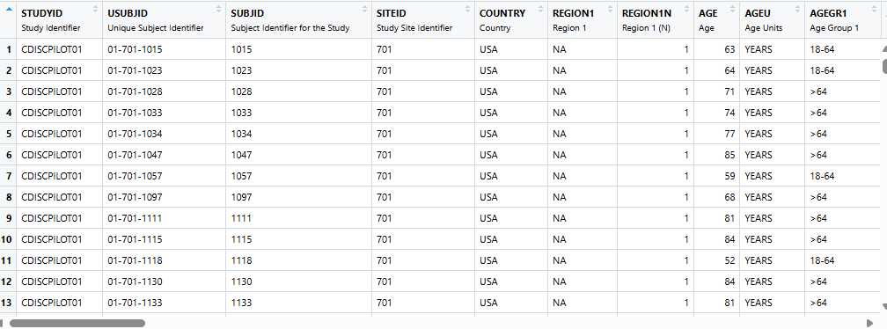
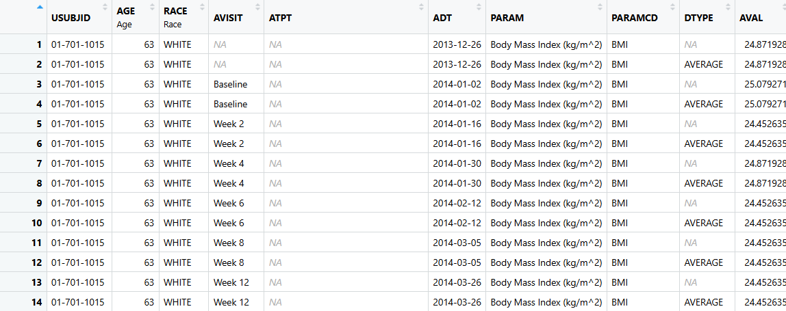

Why I Lean on AI to Learn Code
- Starting a new job recently, I inherited a Python codebase - and I’m a Python newbie.
- I could have handed an agent a
/planand let it do everything. Instead, I fed a chat AI individual functions, code, and docs and asked it to walk me through what things did and why. - That back-and-forth - not just running code, but understanding it - was one of the best learning experiences I’ve had picking up an unfamiliar codebase.
- Some of how we’re learning
admiraltogether today - explain, adapt, troubleshoot, with an AI pair-programmer - is inspired by that.
Objectives
By the end of this ADaM section you will have:
🎯 Gained Fluency with admiral, metatools/metacore, and xportr - with an AI assistant as your pair-programmer
👀 Seen Code creating variables and records common to ADSL and ADVS
🛠️ Practiced Prompting an AI assistant to explain, adapt, and troubleshoot admiral functions instead of hand-writing every line
✅ Completed Hands-on exercises using admiral, leaning on your AI assistant when you get stuck
Agenda
🎬 Set the Stage 11:00 - 11:15
🧬 ADSL 11:15 - 11:45
✏️ Datetime Exercise 11:45 - 11:52
📊 ADVS 11:52 - 12:23
✏️ New Records Exercise 12:23 - 12:30
🍽️ Lunch! 12:30
Where We’re Headed Today
📥 Raw 📋 SDTM 🎯 ADaM 📊 ARD 📈 TFL
- Raw: Where every study starts.
- SDTM: Standardized into a common shape across studies.
- ADaM: Our focus today - analysis-ready variables and records.
- ARD: Summarized into Analysis Results Datasets.
- TFL: Formatted into Tables, Figures, and Listings for submission.
Set the Stage
🕥11:00 - 11:15
Set the Stage
- Data: SDTMs →
ADSL→ADVS - Specs drive every derivation - we’ll peek at ours shortly
- pharmaverse packages that play nice with tidyverse and base R
- Two exercises today:
derive_vars_dtm()inADSL,derive_param_computed()inADVS - Stuck? Ask your AI assistant before hand-coding a fix
Datasets
ADSL & ADVS - Our Two Datasets

ADSL- one record per subject (306 obs, 48 vars). Focus: adding variables.- Built from
{pharmaversesdtm},ADSLsection of our spec. Final version in pharmaverseadam.

ADVS- a Basic Data Structure (BDS), multiple records per subject (~62K records, 68 vars).- Built from
{pharmaversesdtm}vs+ADSL,ADVSsection of spec. Many functions repeat fromADSL.
- No digging through folders - open both scripts straight from the R console:
How We’ll Dig Into the Scripts
- Every slide from here on references specific line numbers in
adsl.R/advs.R(footnoted like^[Lines: 20-25]) - follow along in your open script. - We’ll walk through the key functions together first…
- …then use AI prompts to dig in deeper on the arguments and edge cases, rather than reciting the docs line by line.
Specs
Spec-details
- Gives specifics on how we derive variables in the ADaMs (extreme traceability)
- P21-like spec - a data validation format widely used for creating/validating SDTMs and ADaMs
- Not fit for purpose here - just a helpful guide
- Contains: dataset labels/keys, variable labels/lengths/types linked to method, codelists/control terms
- Let’s take a quick live peek 👀
Key Functions Cheat Sheet: {admiral} 
Key Functions Cheat Sheet: {metacore}, {metatools}, {xportr} 


ADSL
🕥 11:15 - 11:45
Follow Along
Lines in each script are referenced with a footnote like ^[Lines: 20-25] - flip to that spot in adsl.R as we go.
Reading in our spec for ADSL 1
- Takes a P21-like spec and makes it into an object we can easily access.
where_sep_sheet- option to tell if the information for the dataset is in a separate sheet, like in older p21 specs or in a single sheet like newer p21 specsverboseargument should be set to"silent"while developing your spec and ADaMs (replaces the now-deprecatedquietargument).- Same call in ADVS script.
Combine Parent and Supplementary Data 1
- One line of code to join two datasets: parent and supplementary!
- Supps usually are a collection non-standard data and linking to parent
- Function is from
{metatools}
Let’s turn a --DTC to a *DTM or *DT variable 1
Try It: Ask Your AI for Assistance on Dates
- A great first prompt for getting comfortable with Posit Assistant and admiral - try it live in your own console!
I want to see how admiral handles messy dates. Create a small dummy
dataset with a --DTC style character date variable, and give it a
realistic mix of partial values: one full date and time, one with
the time missing, one missing just the day, one with only the year,
and one that's completely blank.
Then use admiral to derive a proper datetime variable from it. I'm
fine with imputing all the way up through the month if it's missing,
but not the year itself - if the year isn't there, just leave it
missing. When a month or day is missing, impute to the end of that
period rather than the beginning, and do the same for a missing time
- push it to the end of the day. We do occasionally capture seconds
in our real data, so don't suppress that from the imputation flag.
Show me the resulting dataset, including the imputation flags, and
briefly explain what happened to each row.Goal
Practice describing what you want in plain language and let the AI assistant map that to the right admiral function and arguments - then compare its choices to what you’d have written by hand.
Try It: Ask Your AI for Assistance on Dates, Round 2
- Now let’s push it further and put
min_dates,max_dates, andpreserveto work.
Let's extend that last exercise. Add a treatment start datetime and
a data cutoff datetime for each subject to the dataset. Also add one
more --DTC record where the month is unknown but the day is - like
"2019---07" for the 7th of some unspecified month.
When you impute, don't throw away a date part just because a part
above it was missing - if we already know the day, keep it even
though we had to guess the month. Also make sure none of the imputed
datetimes end up earlier than that subject's treatment start, or
later than the data cutoff - adjust the imputed value to respect
those boundaries instead of ignoring them.
Show me the resulting dataset and explain how the reference dates
changed the outcome compared to imputing without them.Goal
See how admiral can keep an imputed value from “wandering off” past dates you already know are true - useful when a partial date still needs to make logical sense next to other dates in the study.
A Simple merge 1
- Filter, arrange, join and rename is a common pattern in ADaMs.
by_varsare going to be the shared variables to connect the two datasets- In admiral, all arguments which can be set to multiple variables, a calculation, or an assignment must be started with
rlang::exprs(). - Check out Programming Concepts and Conventions
Let’s get a more complicated merge: order & mode 1
order- for each by group, the first or last observation from the additional dataset is selected with respect to the specified ordermode- determines whether the first or last observation (perorder) is selected- Together,
order = exprs(EXSTDTM, EXSEQ)andmode = "first"say: “for each subject, sort their exposure records by start datetime (then sequence number to break ties), and keep the earliest one”
Let’s get a more complicated merge: filter_add 1
filter_addrestricts which records fromdataset_addare eligible beforeorder/modeever run- Breaking it down:
EXDOSE > 0- keep any record with a real (non-zero) doseEXDOSE == 0 & str_detect(EXTRT, "PLACEBO")- or keep a zero-dose record only when it’s explicitly a placebo administration, so a placebo subject still gets a valid “treatment start” record, but a skipped/withheld dose doesn’t!is.na(EXSTDTM)- and only consider records that actually have a start datetime to order/select on- Together, this narrows the candidate pool before
mode = "first"picks the earliest qualifying record per subject
Try It: Ask Your AI for Assistance on Merging
Create two small example datasets - a subject-level dataset, and an
exposure dataset with several dosing records per subject (some with
a dose of zero for placebo). Then write an admiral call that pulls
each subject's first qualifying dose date into the subject-level
dataset as a new TRTSDTM variable.
I know I need to join on subject, but I'm not sure what to set so
that it picks the *first* qualifying record instead of just any one
of them, or how to exclude the placebo records from consideration.
Fill those parts in and explain the choices you made.Goal
Practice handing the AI a join scenario in plain language and seeing which arguments it reaches for to control ordering and filtering.
Let’s derive a Duration Variable 1
derive_vars_duration()computes a span between two dates/datetimes (e.g. days on treatment, age at an event) - control the units without_unit, and whether a partial period rounds up withadd_one/trunc_out.- It’s powered by
{lubridate}under the hood, which measures spans two ways - duration (an exact number of seconds) and interval (a specific point-to-point span). These usually agree, but can differ slightly for month/year units, since months and years aren’t a fixed number of days.
Let’s apply Control Terms / Code Lists 1
adsl16 %>%
create_var_from_codelist(adsl_spec, input_var = AGEGR1, out_var = AGEGR1N) %>%
create_var_from_codelist(adsl_spec, input_var = RACE, out_var = RACEN) %>%
create_var_from_codelist(adsl_spec, input_var = RACEGR1, out_var = RACEGR1N) %>%
create_var_from_codelist(adsl_spec, input_var = REGION1, out_var = REGION1N) %>%
create_var_from_codelist(adsl_spec, input_var = TRT01P, out_var = TRT01PN) %>%
create_var_from_codelist(adsl_spec, input_var = TRT01A, out_var = TRT01AN)- Numeric variables are handy for sorting in a table or listing for display.
Datetime Exercise
🕚11:45 - 11:52
Datetime Exercise
Your Task
Using derive_vars_dtm(), impute a missing date to the last month/day, and a missing time to 23:59:59.
- Figure out which arguments make that happen - check the documentation or ask your AI assistant if you get stuck.
Datetime Exercise Solution
posit_mh <- tribble(
~USUBJID, ~MHSTDTC,
"01-701-1011", "2019-07-18T15:25:40",
"01-701-1011", "2019-07-18T15:25",
"01-701-1011", "2019-07-18",
"01-701-1015", "2024-02",
"01-701-1015", "2019",
"01-701-1015", "2019---07",
"01-701-1019", ""
)
derive_vars_dtm(
dataset = posit_mh,
new_vars_prefix = "AST",
dtc = MHSTDTC,
highest_imputation = "M",
date_imputation = "last",
time_imputation = "last",
ignore_seconds_flag = FALSE
)# A tibble: 7 × 5
USUBJID MHSTDTC ASTDTM ASTDTF ASTTMF
<chr> <chr> <dttm> <chr> <chr>
1 01-701-1011 "2019-07-18T15:25:40" 2019-07-18 15:25:40 <NA> <NA>
2 01-701-1011 "2019-07-18T15:25" 2019-07-18 15:25:59 <NA> S
3 01-701-1011 "2019-07-18" 2019-07-18 23:59:59 <NA> H
4 01-701-1015 "2024-02" 2024-02-29 23:59:59 D H
5 01-701-1015 "2019" 2019-12-31 23:59:59 M H
6 01-701-1015 "2019---07" 2019-12-31 23:59:59 M H
7 01-701-1019 "" NA <NA> <NA> ADVS
🕦11:52 - 12:23
Follow Along
Lines in each script are referenced with a footnote like ^[Lines: 72-80] - flip to that spot in advs.R as we go.
Let’s talk about lookup tables 1
- Moving from
**TEST/**TESTCDtoPARAM/PARAMCD. - More information in the
PARAM/PARAMCD- useful for displays. - Can be used for other lookup tables, e.g. Grading/Toxicity.
Let’s add more records for each subject 1
advs <- advs %>%
derive_param_computed(
by_vars = exprs(STUDYID, USUBJID, VISIT, VISITNUM, ADT, ADY, VSTPT, VSTPTNUM),
parameters = "WEIGHT",
set_values_to = exprs(
AVAL = AVAL.WEIGHT / (AVAL.HEIGHT / 100)^2,
PARAMCD = "BMI",
PARAM = "Body Mass Index (kg/m^2)",
AVALU = "kg/m^2"
),
constant_parameters = c("HEIGHT"),
constant_by_vars = exprs(USUBJID)
)Try It: Ask Your AI for Assistance on Computed Parameters
Create a small example vital signs dataset with WEIGHT records at
several visits per subject, but HEIGHT collected only once per
subject. Then write an admiral call that derives a new BMI parameter
from those records, using weight in kg divided by height in meters
squared.
Since HEIGHT is only collected once, I don't want to require it to
be present at every visit for BMI to be calculated - I want that one
HEIGHT value reused across all of a subject's visits. Figure out how
to tell the function that, and explain what would happen if you left
that part out.Goal
Practice a “one value applies to many records” scenario, which comes up any time a computed parameter mixes visit-level and subject-level inputs.
Let’s derive DTYPE summary records 1
- A DTYPE variable indicates a record within a parameter has been imputed or modified, DTYPE will indicate the method used to populate the analysis value, e.g AVERAGE, MAXIMUM, MINIMUM, LOCF, PHANTOM.
Let’s restrict! 1
- Check out Higher Order Functions for more information.
call_derivation()is super handy if you are doing similar calls with same function, but just changing one or two arguments.
Try It: Ask Your AI for Assistance on Restricting a Derivation
Create a small example vital signs dataset with multiple visits per
subject and a treatment start date. Then use admiral's higher order
function to flag the last on-treatment record per subject as the
baseline flag - but only consider records collected on or before
treatment start when deciding which one is "last."
I'm not sure how to tell the function to only look at that subset of
records without permanently filtering the rest of the dataset out of
the result - figure out how to do that and explain how it's different
from just filtering the dataset first.Goal
See how a higher order function like restrict_derivation() lets you scope a derivation to a subset of records without losing the rest of the dataset.
Let’s add a BASE variable 1
- Used to calculate CHG and PCHG variables
Let’s add an Analysis Sequence Variable 1
- ASEQ uniquely indexes records within a subject within an ADaM dataset.
- ASEQ is useful for traceability when the dataset is used as input to another ADaM dataset
check_type- If “message”, “warning” or “error” is specified, the specified message is issued if the observations of the input dataset are not unique with respect to the by variables and the order.
Let’s get that ADaM ready for regulatory agencies 1
- Functions from
{metatools} dataset_nameis no longer needed here - since ouradvs_specmetacore object is already scoped to a single dataset viaselect_dataset(),check_variables()picks that up automatically (the argument is deprecated as ofmetatools0.2.0).- Note similar code in
ADSLscript!
Let’s get that data read for regulatory agencies 1
- Functions from
{xportr} - Note similar code in
ADSLscript! domainis needed depending on howmetacoreobject is created.
New Records Exercise
🕦 12:23 - 12:30
New Records Exercise
ADVS <- tribble(
~USUBJID, ~PARAMCD, ~PARAM, ~AVALU, ~AVAL, ~VISIT,
"01-701-1015", "DIABP", "Diastolic Blood Pressure (mmHg)", "mmHg", 51, "BASELINE",
"01-701-1015", "SYSBP", "Systolic Blood Pressure (mmHg)", "mmHg", 121, "BASELINE",
"01-701-1028", "DIABP", "Diastolic Blood Pressure (mmHg)", "mmHg", 79, "BASELINE",
"01-701-1028", "SYSBP", "Systolic Blood Pressure (mmHg)", "mmHg", 130, "BASELINE",
)Your Task
Write a derive_param_computed() call that derives MAP from the SYSBP/DIABP records above:
\[ MAP = \frac{2 \times DIABP + SYSBP}{3} \]
- Figure out which arguments make that happen - ask your AI assistant if you get stuck.
New Records Exercise Solution
ADVS <- tribble(
~USUBJID, ~PARAMCD, ~PARAM, ~AVALU, ~AVAL, ~VISIT,
"01-701-1015", "DIABP", "Diastolic Blood Pressure (mmHg)", "mmHg", 51, "BASELINE",
"01-701-1015", "SYSBP", "Systolic Blood Pressure (mmHg)", "mmHg", 121, "BASELINE",
"01-701-1028", "DIABP", "Diastolic Blood Pressure (mmHg)", "mmHg", 79, "BASELINE",
"01-701-1028", "SYSBP", "Systolic Blood Pressure (mmHg)", "mmHg", 130, "BASELINE",
)
derive_param_computed(
ADVS,
by_vars = exprs(USUBJID, VISIT),
parameters = c("SYSBP", "DIABP"),
set_values_to = exprs(
AVAL = (AVAL.SYSBP + 2 * AVAL.DIABP) / 3,
PARAMCD = "MAP",
PARAM = "Mean Arterial Pressure (mmHg)",
AVALU = "mmHg",
)
)# A tibble: 6 × 6
USUBJID PARAMCD PARAM AVALU AVAL VISIT
<chr> <chr> <chr> <chr> <dbl> <chr>
1 01-701-1015 DIABP Diastolic Blood Pressure (mmHg) mmHg 51 BASELINE
2 01-701-1015 SYSBP Systolic Blood Pressure (mmHg) mmHg 121 BASELINE
3 01-701-1028 DIABP Diastolic Blood Pressure (mmHg) mmHg 79 BASELINE
4 01-701-1028 SYSBP Systolic Blood Pressure (mmHg) mmHg 130 BASELINE
5 01-701-1015 MAP Mean Arterial Pressure (mmHg) mmHg 74.3 BASELINE
6 01-701-1028 MAP Mean Arterial Pressure (mmHg) mmHg 96 BASELINEQuestions and Resources
Docs & pkgdown sites:
admiral, metatools, metacore, xportr
admiraldiscovery - templates & presentation archive
Want More?
A bunch more Ben-style “Ask Your AI” prompts are coming up right after this section - if you want to mess around with more admiral/metatools/xportr functions on your own time.
Closing Thoughts
- Only able to show a small number of
pharmaversepackages and functions today, but please delve deeper to explore the full breadth- If you’d like to contribute to
pharmaverse, check out options at pharmaverse.org- Finally, be sure to join our community on Slack!
Explore on Your Own
Ran out of time today? Try these extra “Ask Your AI” prompts on your own - same style as what we practiced live, just a few more functions worth getting comfortable with.
Try It: Ask Your AI for Assistance on Reading a Spec
Pretend I have a P21-style Excel spec file at "metadata/my_spec.xlsx".
Write the metacore call to read it in and scope it down to just the
ADSL dataset.
I'm developing this spec right now, so I don't want it printing extra
messages or warnings while I iterate on it - figure out which argument
controls that and set it appropriately. I also don't know whether my
spec keeps its "where" conditions on a separate sheet or all in one
sheet like newer specs do - make a reasonable assumption, tell me
which one you picked, and explain what would change if it were the
other way.Goal
Practice letting the AI reason about a setting you’re genuinely unsure of, rather than only using it for settings you already know the answer to.
Try It: Ask Your AI for Assistance on Supplemental Qualifiers
Create a small example parent SDTM dataset (like DM) and a matching
supplemental qualifier dataset (SUPPDM) with a couple of extra
non-standard variables attached to a few of the same subjects.
Then write the metatools call that joins the parent and supplemental
data into one dataset. Show me the result, and explain what happens
to a subject who appears in the supplemental dataset but not the
parent dataset, or vice versa.Goal
Build intuition for a one-line helper function by seeing it work (and fail gracefully) on data you understand.
Try It: Ask Your AI for Assistance on Durations
Create a small example dataset with a birth date and a randomization
date for a handful of subjects, including at least one subject
missing one of those dates.
Then write an admiral call to calculate each subject's age in years
at randomization. I want a whole number of years - if someone hasn't
had their most recent birthday yet relative to randomization, don't
round their age up to the next year. Figure out which arguments
control that rounding behavior and set them, then explain your
choices and what happens for the subject with a missing date.Goal
Practice describing a rounding/truncation preference in plain terms and letting the AI translate it into the right combination of arguments.
Try It: Ask Your AI for Assistance on Codelists
Create a small example dataset with a character SEX variable using
values "M" and "F", and a separate codelist data frame with code and
decode columns mapping those values to numeric codes.
Then write a metatools call to add a new numeric SEXN variable
derived from the codelist. I'm not sure whether my SEX values match
the "code" side or the "decode" side of the codelist - pick the
argument that controls that direction, tell me which way you assumed
it goes, and explain what the output would look like if that
assumption were backwards.Goal
Practice a case where getting a single argument’s direction wrong would silently produce the wrong numbers - a good habit to build before you’re doing this on real data.
Try It: Ask Your AI for Assistance on Lookup Tables
Create a small example vital signs dataset with a test code variable
(like VSTESTCD), and a separate lookup table mapping those test codes
to standardized PARAMCD/PARAM values. Include one test code in the
vital signs data that doesn't have a matching row in the lookup
table.
Then write an admiral call that merges the lookup table into the
vital signs dataset to add PARAMCD/PARAM. I want to know right away
if any of my test codes don't have a match, instead of silently
ending up with missing values - figure out which argument surfaces
that and turn it on, then explain what happens for the unmatched
code.Goal
Practice catching a silent data-quality problem (an unmapped code) instead of discovering it downstream.
Try It: Ask Your AI for Assistance on Summary Records
Create a small example vital signs dataset with three replicate blood
pressure readings per subject at one visit, and make one of those
three readings missing for one subject.
Then write an admiral call that adds one new summary record per
subject that averages the replicate readings, marking it as derived
with DTYPE = "AVERAGE". I don't want the missing reading to turn the
whole average into a missing value - figure out how to exclude it
before averaging instead, and explain the difference between doing
that versus averaging with `na.rm = TRUE`.Goal
Notice that filter_add scopes which rows are averaged before the calculation runs, rather than needing to handle missing values inside the formula itself.
Try It: Ask Your AI for Assistance on Sequence Numbers
Create a small example dataset with a couple of records per subject
that would tie under a simple ordering - like two records with the
same parameter and date but nothing to distinguish which came first.
Then write an admiral call that adds an analysis sequence number per
subject, ordered by the fields I do have. I want it to stop with a
hard error if that ordering doesn't actually produce a unique number
for every record, rather than silently assigning duplicate sequence
numbers - figure out how to require that, and explain what the error
tells you versus what would happen at the default setting.Goal
See how a strict check_type turns a silent data problem (duplicate ASEQ values) into something you’re forced to notice and fix.
Try It: Ask Your AI for Assistance on Preparing an XPT File
Create a small example ADaM-like dataset with a couple of variables
that don't have labels yet, plus a tiny metadata object describing
what those labels should be. Then write the xportr calls to apply
those labels to the dataset and export it as an xpt file named
"adsl.xpt".
I don't remember everything xportr needs beyond the dataset and the
file path to make sure the labels and dataset-level metadata carry
through correctly into the xpt file - figure out what else to pass
and explain what each additional piece is doing.Goal
Practice the “last mile” of an ADaM - going from a labeled R data frame to a submission-ready xpt file - without having to memorize every xportr argument up front.
Packages and Session Information
R version 4.6.1 (2026-06-24)
Platform: x86_64-pc-linux-gnu
Running under: Ubuntu 24.04.5 LTS
Matrix products: default
BLAS: /usr/lib/x86_64-linux-gnu/openblas-pthread/libblas.so.3
LAPACK: /usr/lib/x86_64-linux-gnu/openblas-pthread/libopenblasp-r0.3.26.so; LAPACK version 3.12.0
locale:
[1] LC_CTYPE=C.UTF-8 LC_NUMERIC=C LC_TIME=C.UTF-8
[4] LC_COLLATE=C.UTF-8 LC_MONETARY=C.UTF-8 LC_MESSAGES=C.UTF-8
[7] LC_PAPER=C.UTF-8 LC_NAME=C LC_ADDRESS=C
[10] LC_TELEPHONE=C LC_MEASUREMENT=C.UTF-8 LC_IDENTIFICATION=C
time zone: UTC
tzcode source: system (glibc)
attached base packages:
[1] stats graphics grDevices datasets utils methods base
other attached packages:
[1] fontawesome_0.5.3 reactable_0.4.5 lubridate_1.9.5 admiral_1.5.0
[5] tibble_3.3.1 countdown_0.6.0 glue_1.8.1
loaded via a namespace (and not attached):
[1] jsonlite_2.0.0 dplyr_1.2.1 compiler_4.6.1 renv_1.2.4
[5] tidyselect_1.2.1 xml2_1.6.0 stringr_1.6.0 tidyr_1.3.2
[9] yaml_2.3.12 fastmap_1.2.0 R6_2.6.1 generics_0.1.4
[13] admiraldev_1.5.0 knitr_1.51 htmlwidgets_1.6.4 pillar_1.11.1
[17] rlang_1.3.0 utf8_1.2.6 stringi_1.8.9 reactR_0.6.1
[21] roxygen2_8.1.0 xfun_0.60 otel_0.2.0 timechange_0.4.0
[25] cli_3.6.6 withr_3.0.3 magrittr_2.0.5 digest_0.6.39
[29] hms_1.1.4 lifecycle_1.0.5 vctrs_0.7.3 evaluate_1.0.5
[33] rmarkdown_2.31 purrr_1.2.2 tools_4.6.1 pkgconfig_2.0.3
[37] htmltools_0.5.9